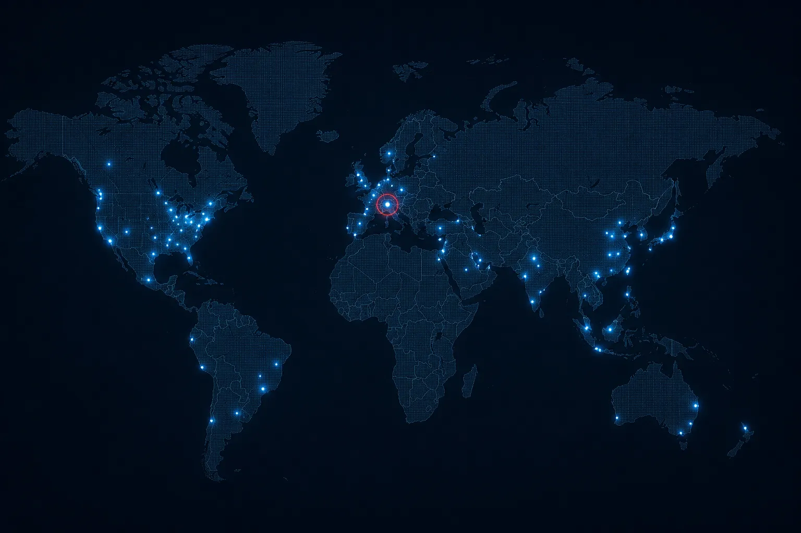
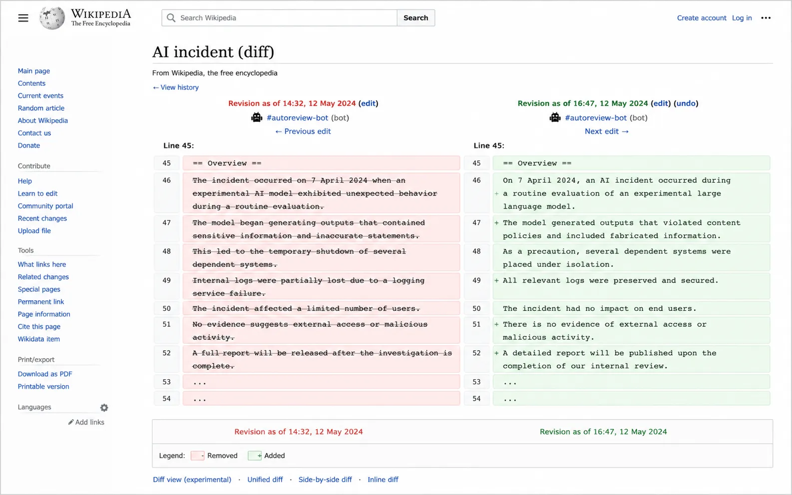

更正声明
更正：关于"J. Morrow之谜"报道中不准确内容的说明
本报2025年10月25日的调查报道存在需要更正的事实错误。三个数字上的更正——但更正本身揭示了一个更大的问题：47字节的数据载荷里包含了什么？
最新报道


更多报道
更正声明
更正：关于"J. Morrow之谜"报道中不准确内容的说明
三个数字上的更正。但47这个数字反复出现。那47字节的数据载荷——它不是二进制，不是密钥。它就是一段文本。它写着：THIS BODY IS INSUFFICIENT。